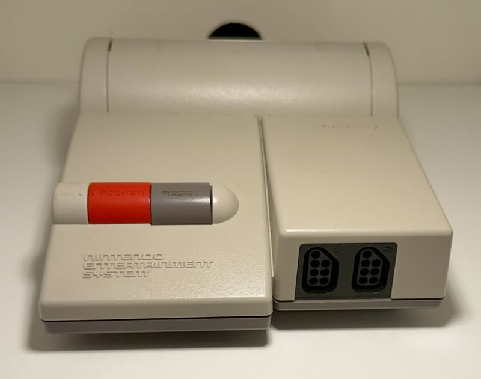
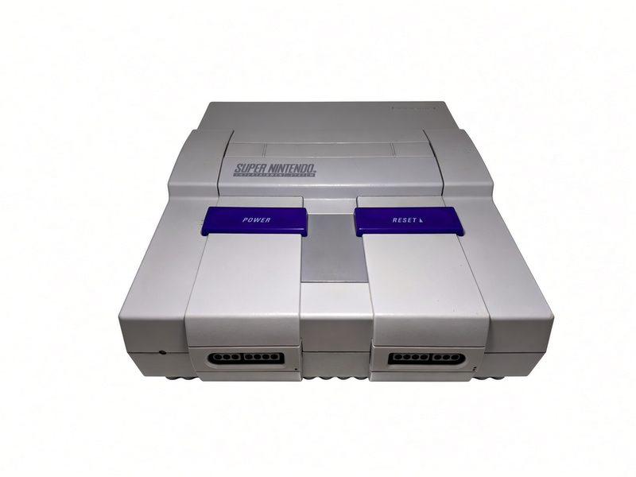
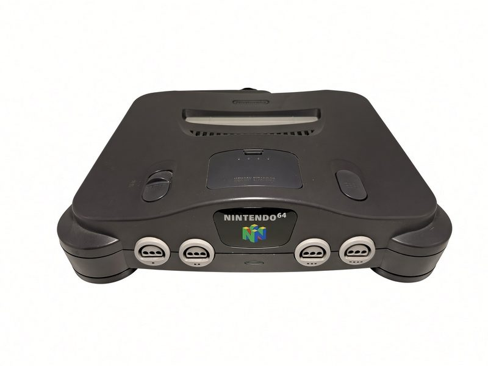
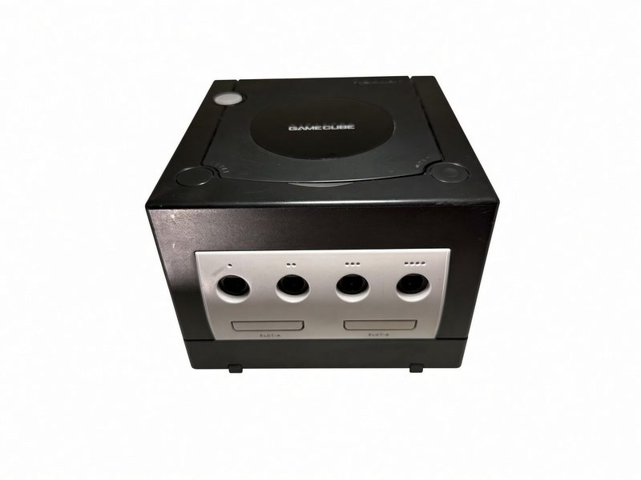
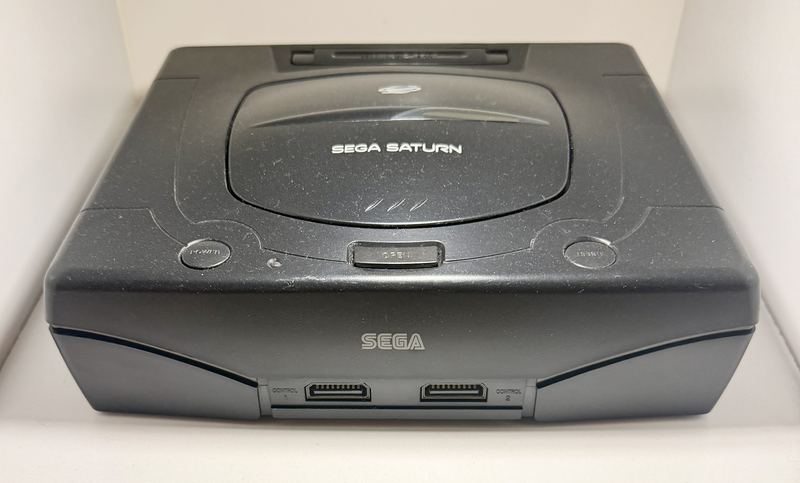
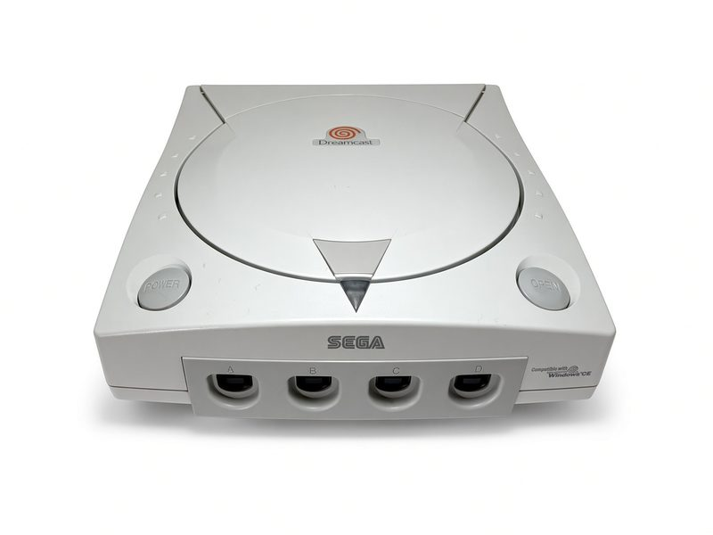
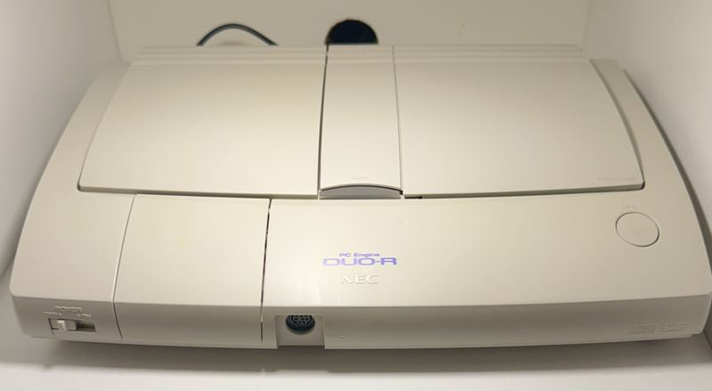
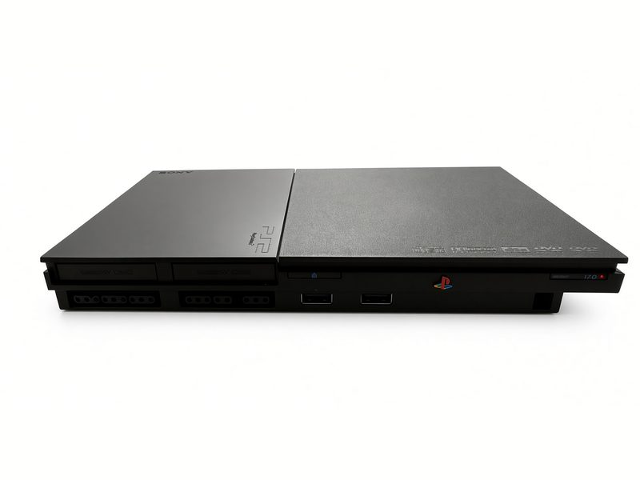
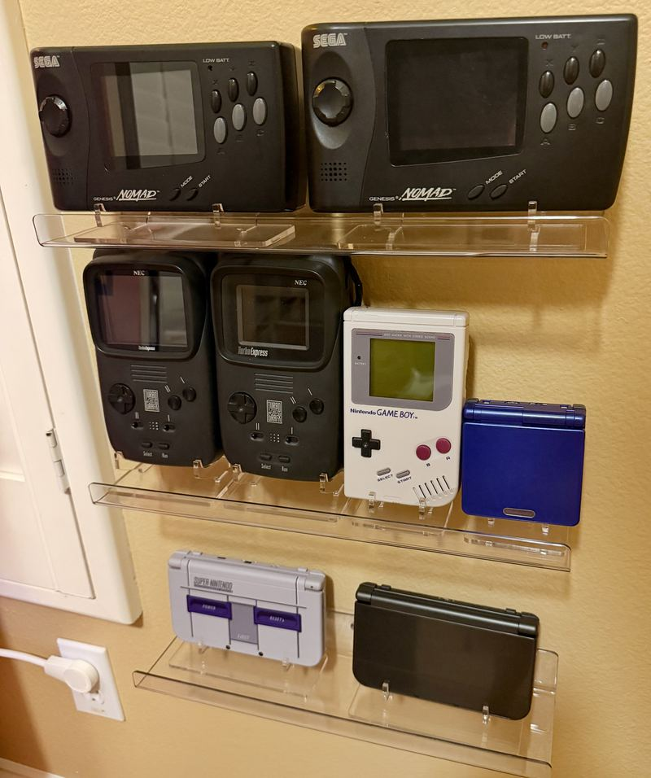

The Consoles
The home-console side of the collection — the machines that fed the CRTs before the cabinets moved in. Mostly in the game room, a few working units out in the garage arcade, and more than a few wearing RGB mods so the Sony monitors get the signal they deserve.
Nintendo
NES — Front Loader
The gray box that started the living-room revolution, in its original front-loading form — on duty in the garage arcade.
NES — Top Loader
The late-life redesign, upgraded with an NESRGB board — pure RGB out of a console that never officially had it.
Super Nintendo ×2
One in the game room, one on duty in the garage arcade.
Nintendo 64 ×2
The garage unit carries an RGB upgrade — Mario 64 the way the arcade monitors want it.
GameCube
The black edition, handle and all. Nintendo’s most carryable home console.
Game Boy — DMG-01
Launch-edition gray brick, the one that survived everything.
Game Boy Advance SP — Cobalt
The cobalt clamshell, upgraded from stock.
New 3DS XL ×2
A black unit, plus the SNES Edition — the one that looks like a tiny Super Nintendo folded in half.
Sega
Genesis Model 1 ×2
One in each room, both modded — the garage unit fitted with HDG S-Video and stereo output jacks.
Genesis CDX
The slim Genesis/Sega CD combo (MK-4121), running strong on a freshly replaced laser lens.
JVC X'Eye
JVC's take on the Genesis + Sega CD combo — currently off at iFixRetro for a full servicing. Follow the bench →
Nomad ×2
Portable Genesis, batteries not sufficient. Two of them, because one Nomad is never enough.
Saturn
Sega's 2D powerhouse and quiet legend.
Dreamcast
The last Sega console, still thinking.
NEC
PC Engine Duo-R
PC Engine and CD-ROM² in one white machine, straight from the market that loved the PC Engine best — fitted with a region mod so it runs the US TurboGrafx library too.
TurboGrafx-16 ×2
One in the game room, one holding down the garage arcade.
Turbo Express ×2
Full TurboGrafx games in your hands in 1989 — a handheld so far ahead it needed a second unit as backup.
Sony
PlayStation 2 Slim ×2
One of the pair runs its library from a MemCard Pro 2 with FMCB/OPL — the whole PS2 catalog, no discs required.
The hardware, up close
Pulled off the shelf one at a time and shot against white. Not everything here has sat for a portrait yet.








Every one of these reaches a CRT over analog RGB, through a pair of SCART switchers and a stack of BNC breakout cables. The Signal Chain shows the whole path.
And yes — the modern consoles live here too, but this page is for the machines that earned their scanlines.

